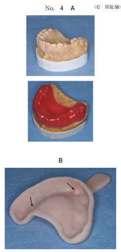

印象採得
印象採得の手順
- 概形印象（既製トレー）→ 研究用模型
- 個人トレー製作
- 印象前準備（ブロックアウト、リリーフ）
- 筋圧形成（辺縁形成）
- 精密印象（最終印象）→ 作業用模型
概形印象
既製トレーとアルジネート印象材で研究用模型を製作する。
- 欠損部顎堤とトレーのスペースにコンパウンドを補填
- 辺縁をモデリングコンパウンドで延長
個人トレーの製作
研究用模型上で製作。精密印象用に使用する。
個人トレーの構造
- トレー本体：常温重合レジン製
- 柄：把持用
- ストッパー：トレーの定位置を決定
- モデリングコンパウンド：辺縁封鎖
個人トレーの利点
- 製作する義歯の設計にかなった印象採得ができる
- 印象材の厚みを均一にできる
- 辺縁にコンパウンドを付与し、適切な筋圧形成ができる
- リリーフ量を調整することにより印象圧をコントロールできる
個人トレー製作手順
- トレー外形線の記入
- サベイヤーでトレーの着脱方向を決定
- アンダーカットのブロックアウト
- 残存歯上をワックスで被覆
- 印象圧を減圧したい部位をリリーフ
- トレー用常温重合レジンの圧接
- コンパウンドの付与
印象採得の種類
機能印象（加圧印象）法
粘膜支持型義歯の製作に用いる。床下粘膜を加圧した状態で印象採得。
| 印象法 | 特徴 |
|---|---|
| 咬合圧印象 | 患者に咬合させて印象採得。床下粘膜支持を高める。 |
| 筋圧形成 | 辺縁部をコンパウンドで形成。機能時の頬・口唇・舌の動きを記録。 |
| 無圧印象 | 粘膜を加圧せず印象採得。歯根膜支持型に使用。 |
遊離端欠損部の機能印象
- モデリングコンパウンドによる辺縁封鎖
- ミディアムタイプのシリコーンゴム印象材の使用
- レストシート部のストッパーを適合させる
注意：スペーサーや遁出孔の付与は加圧印象には不要（無圧印象向け）。
ストッパーの役割
- トレーの位置決め
- 印象圧のコントロール
- 印象材厚みの均一化
印象体の消毒
アルジネート印象体は水洗後、次亜塩素酸ナトリウムで消毒する。
過去問
105A106
床下粘膜支持を高める印象法はどれか。1つ選べ。
a 無圧印象
b 咬合圧印象
c 解剖学的印象
d ポストダミング
e ウォッシュインプレッション
b 咬合圧印象
c 解剖学的印象
d ポストダミング
e ウォッシュインプレッション
正解：b
【解説】咬合圧印象は患者に咬合させて粘膜を加圧した状態で印象採得し、床下粘膜支持を高める。
113C34
個人トレーを用いた遊離端欠損部の機能印象で行うのはどれか。2つ選べ。
a トレー全面の遁出孔の付与
b レストシート部のストッパーの適合
c トレー顎堤粘膜面のスペーサーの付与
d モデリングコンパウンドによる辺縁封鎖
e ミディアムタイプのシリコーンゴム印象材の使用
b レストシート部のストッパーの適合
c トレー顎堤粘膜面のスペーサーの付与
d モデリングコンパウンドによる辺縁封鎖
e ミディアムタイプのシリコーンゴム印象材の使用
正解：d, e
【解説】機能印象では辺縁封鎖とミディアムタイプ印象材を使用。遁出孔やスペーサーは無圧印象向け。
105C58
個人トレー製作のための模型の写真（別冊No.4A）と製作した個人トレーの内面の写真（別冊No.4B）とを別に示す。
矢印で示す部位の役割で正しいのはどれか。2つ選べ。

a 辺縁封鎖
b 位置決め
c 印象圧のコントロール
d 印象材の厚みの確保
e 印象材の口腔内への流出防止
b 位置決め
c 印象圧のコントロール
d 印象材の厚みの確保
e 印象材の口腔内への流出防止
正解：b, c
【解説】矢印はストッパー。位置決めと印象圧のコントロールの役割を持つ。
108C97
補綴装置作製のための印象採得を行った。印象体の写真（別冊No.20）を別に示す。
印象体水洗後の消毒に用いるのはどれか。1つ選べ。

a エタノール
b グルタラール
c 塩化ベンザルコニウム
d ポビドンヨード
e 次亜塩素酸ナトリウム
b グルタラール
c 塩化ベンザルコニウム
d ポビドンヨード
e 次亜塩素酸ナトリウム
正解：e
【解説】アルジネート印象体の消毒には次亜塩素酸ナトリウムを使用する。